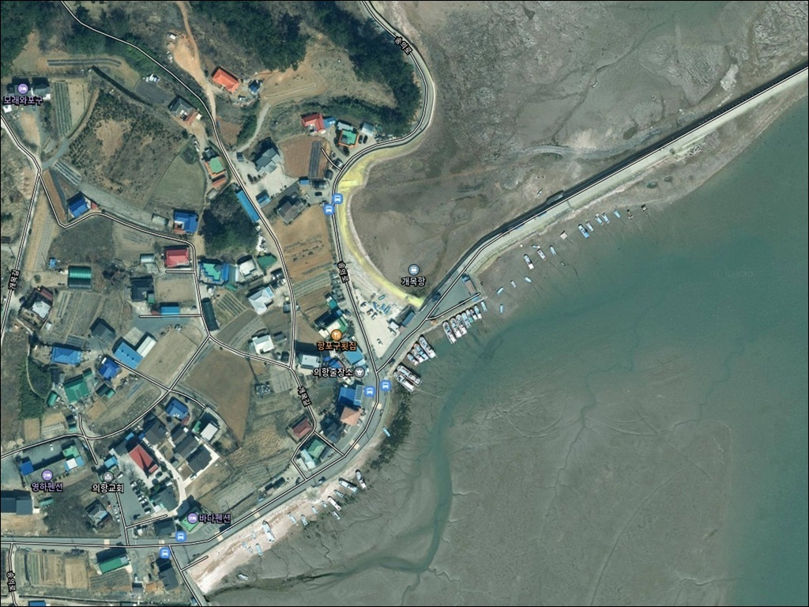
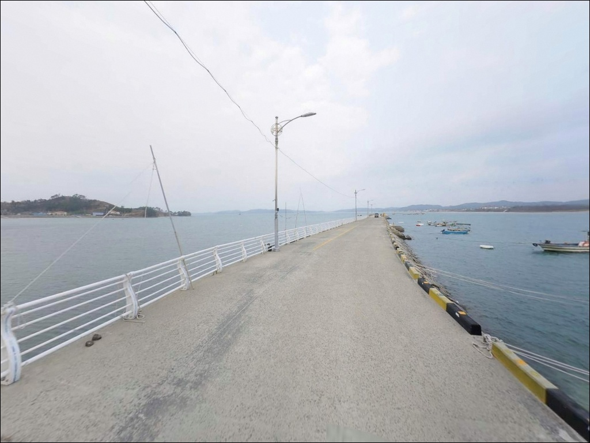
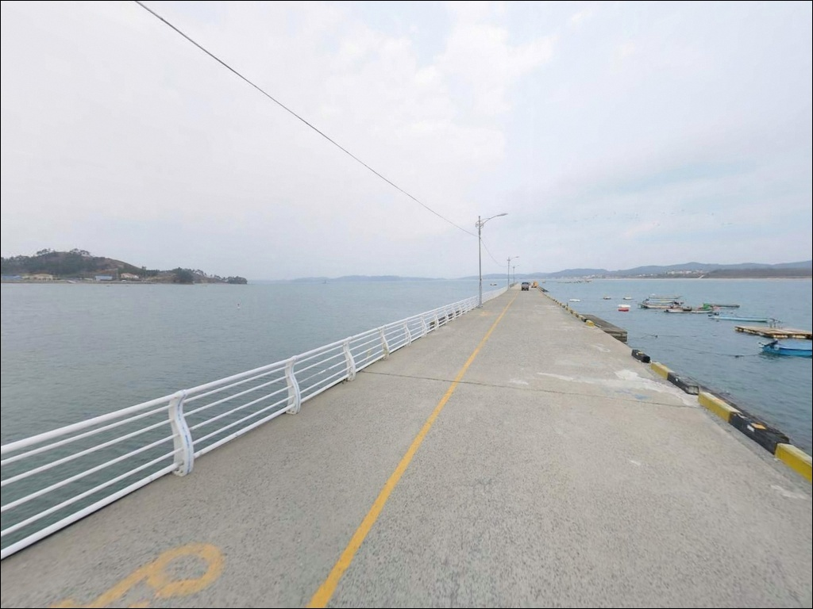
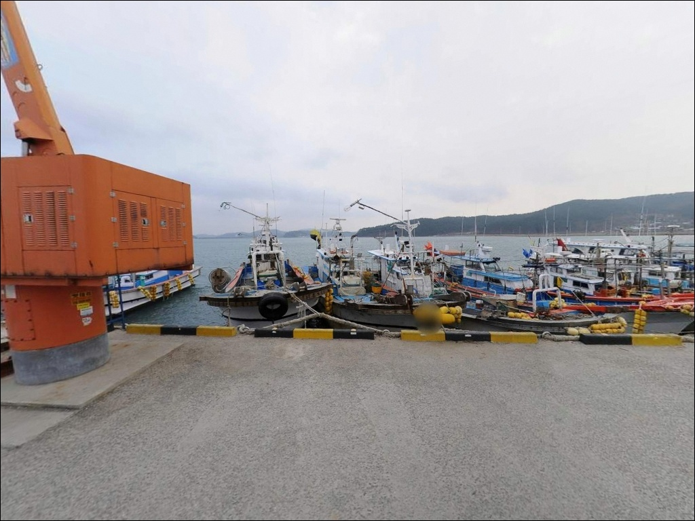
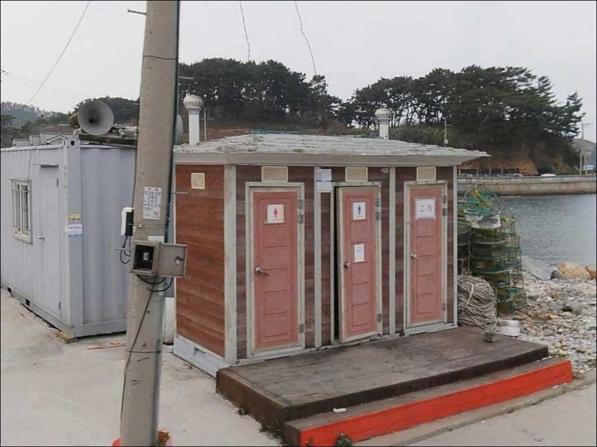
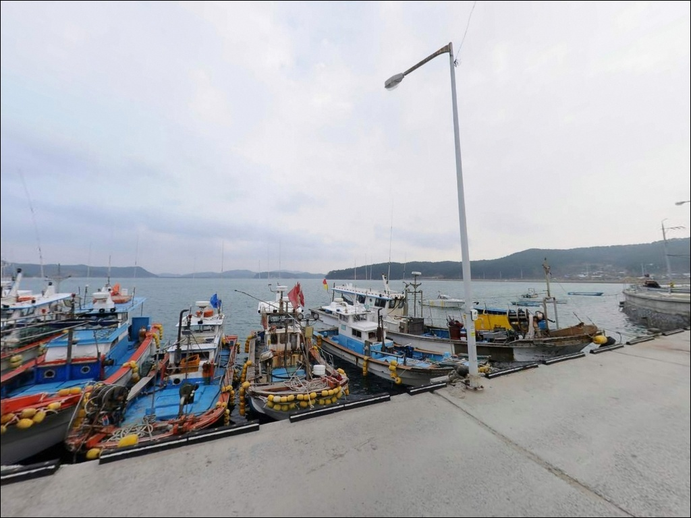
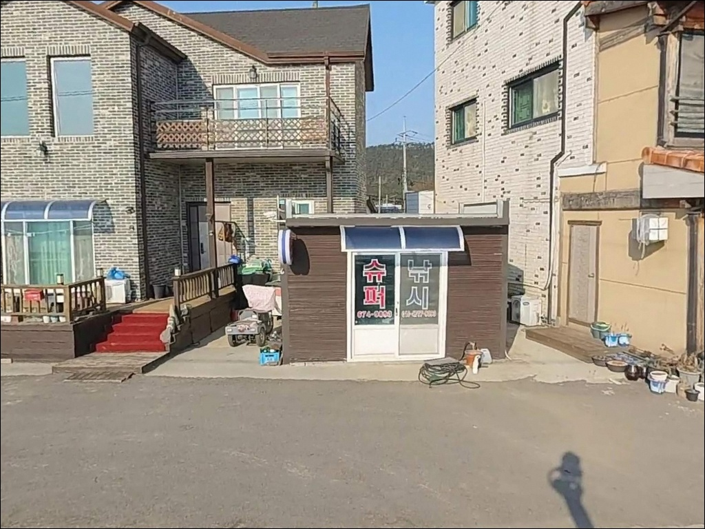
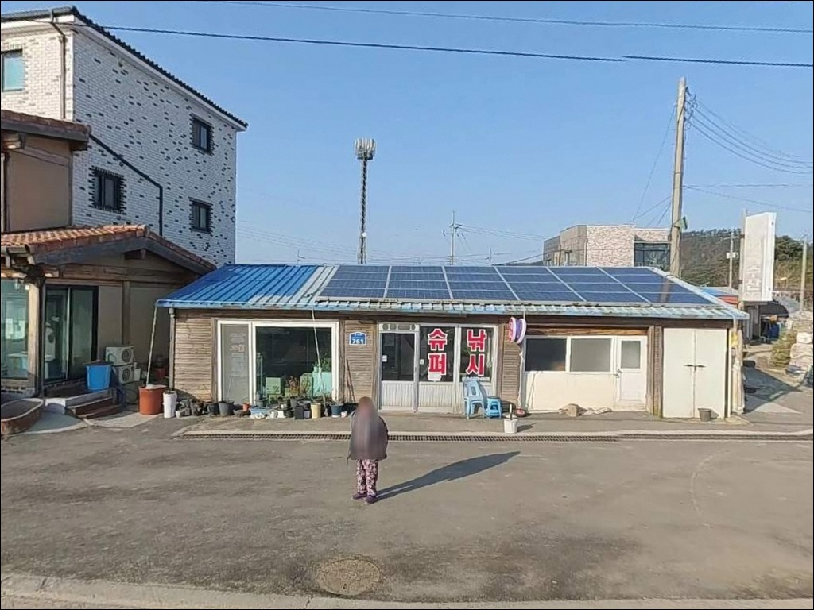
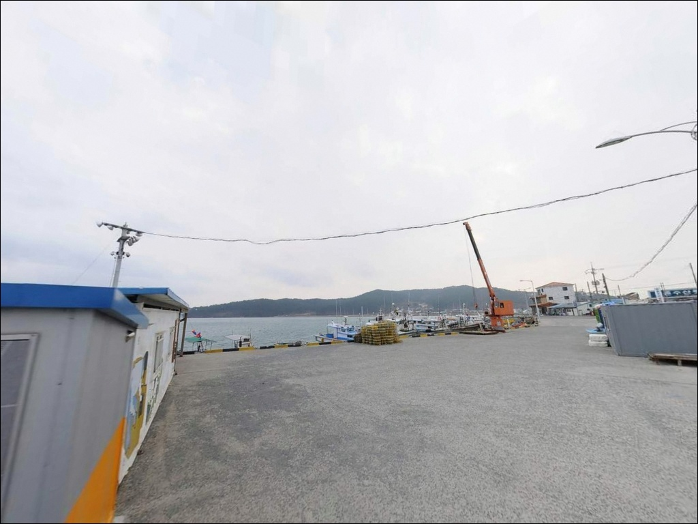

개목항, 충남 태안군 조용한 차박, 낚시 장소
이 페이지에는 광고(제휴 링크 포함)가 있으며, 광고 링크를 통해 구매하면 운영자가 판매 수익 또는 수수료를 받을 수 있습니다. 포인트 사진: 카카오맵 스카이뷰·로드뷰. 이 페이지의 지도·사진 이미지는 카카오맵의 실제 서비스 이미지와 다를 수 있습니다.


포인트 안내
개목항
충남 태안군 소원면 의항리 294
서해 소형 항에서 가장 많이 놓치는 판단은
물때입니다.
만조 전후를 벗어나면 선착장 끝단까지 수심이
빠르게 줄어드는 서해 특성상,
잘못된 시간에 도착하면
원하는 자리에서 채비를 내릴 수 없게 됩니다.
개목항은 만 안쪽으로 깊숙이 자리한
내만형 소형 항구입니다.
직접적인 외해 파도 영향이 적고
방파제와 선착장 구조가 갖춰져 있어
생활낚시부터 원투낚시까지
복합 공략이 가능한 구조입니다.
이 글은 개목항의 진입 동선, 지형 구조,
물때 기반 낚시 방식에 집중합니다.
조황 단정이나 시설 확정 정보는
이 글의 범위에 포함되지 않습니다.

1. 진입 동선과 포인트 접근성
개목항은 모항삼거리에서 신두리·학암포 방향으로
진입한 뒤 의항리 마을도로를 따라 들어가는 구조입니다.
주요 국도에서 벗어나 내부로 이어지는 구간이 있으며,
소형 어촌 특성상
일부 구간 도로 폭이 좁아지는 곳이 있을 수 있습니다.
소형에서 중형 승용차 기준 진입에는
큰 어려움이 없는 수준으로 보입니다.
대형 차량이나 캠핑 장비를 많이 싣고 가는 경우라면
출발 전에 위성지도로 진입로를
미리 확인해 두는 편이 좋습니다.
주차는 방파제 입구 주변 공터 또는
선착장 인근 공간을 활용하는 방식이
일반적으로 선택되는 동선입니다.
어선 이동 구역을 막지 않는 자리를
먼저 파악한 뒤 차를 세우는 것이 기본 매너입니다.

2. 차박 환경과 야간 체류 여건
개목항은 인구가 많지 않은 소형 어촌마을에
자리하고 있습니다.
야간에는 차량 통행이 적고 전체적으로
조용한 분위기인 편입니다.
다만 민가와 가까운 구조라
완전한 프라이빗 환경은 기대하기 어렵습니다.
내만형 구조 특성상 외해 직접 파도 영향은
비교적 적은 편이나,
서해 특성상 바람 방향과 세기는
계절에 따라 달라질 수 있습니다.
야간 체류를 계획하고 있다면
출발 전 기상 예보를 반드시 확인하는 편이 좋습니다.
항구 주변 가로등 밀도는 마을 내부보다
방파제 끝단이나 해안선 쪽으로 갈수록
어두운 구간이 남아 있을 수 있습니다.
개인 조명 장비는 필수이며,
야간 소음과 취사 관련 민원 발생을 줄이는
조용한 체류 방식이 현실적인 접근입니다.


3. 주변 편의시설 및 인프라 현황
개목항 주변에는 음식점, 슈퍼, 펜션이
일부 위치해 있습니다.
소형 어촌 관광지 성격을 갖추고 있어
기본적인 식재료와 간단한 낚시 소품은
현장에서 해결될 가능성이 있는 편입니다.
단, 운영 시간은 현장에서 미리 확인하는 것이
실패 없는 준비 방법입니다.
2025년 어촌뉴딜300 사업 준공으로
어민복지센터 등 신규 시설이
항구 내에 들어선 상태입니다.
기존보다 항구 환경이 정비된 편이라
방파제 접근 동선도 이전보다
깔끔하게 정리된 구간이 늘었을 가능성이 있습니다.
반경 10km 이내에는 모항항과 학암포방파제가 있어,
부족한 장비나 낚시 소품이 생겼을 때
이동해서 해결하는 동선도 활용할 수 있습니다.
출발 전에 식수, 연료, 여분 채비는
미리 준비해 두는 편이 안전합니다.

4. 방문 전 반드시 챙겨야 할 준비사항
개목항 방문에서 가장 먼저 확인해야 할 것은
물때입니다.
서해 방파제 낚시에서 물때 확인은
출조 여부를 결정하는 기본 조건입니다.
바다타임에서 의항리 기준 물때를 확인하고,
만조 전후 2~3시간을 기준으로
입장 시각을 맞추는 것이 기본 전략입니다.
사리 전후에는 조수간만의 차가 커져
선착장 끝단 수심이 급격히 변하는 구간이 생깁니다.
조류가 세지는 시간대에는 채비 컨트롤이
어려워질 수 있으므로,
조금 전후를 노리거나 만조 타이밍에 맞추는
계획이 현실적입니다.
방파제와 선착장 구간에서는
구명조끼 착용이 기본입니다.
석축이나 갯바위 구간은 미끄럼에 주의하고,
야간에는 헤드랜턴을 반드시 준비해야 합니다.
어선 작업 구역과 어구에 접촉하지 않도록
자리를 잡는 것도 현장 매너의 기본입니다.

5. 항구 형태가 낚시에 유리한 이유
개목항은 항구 형태가 잘록하게 들어간
만 안쪽 구조로 자리하고 있습니다.
이 구조 덕분에 내항은 비교적 파도 영향이 적고
정온수역에 가까운 환경이 유지되는 편입니다.
방파제 끝단과 선착장 수로 입구 방향으로 갈수록
수심 변화와 조류 흐름이 살아나는 구간이 있을 수 있습니다.
서해안 특성상 조수간만의 차가 크기 때문에
간조 시에는 선착장 주변 지형이 많이 드러납니다.
만조 전후에는 방파제 끝단과 수로 방향에서
수심이 충분히 확보되어 원투와 루어 모두
제대로 운용할 수 있는 조건이 만들어집니다.
방문 전에 최신 조황은 한 번 더 검색해 보시기 바랍니다.
항구 주변에는 갯바위 구간이 부분적으로 있는 편입니다.
암초성 어종이 서식하기 좋은 여건이 갖춰진 구조로,
이 지형에서는 우럭, 노래미 계열을
기대해 볼 수 있는 편입니다.
원투낚시란 무게 있는 봉돌 채비를 멀리 투척해
바닥 어종을 노리는 낚시 방식입니다.


6. 개목항에 어울리는 낚시 스타일
이 포인트에서 가장 안정적인 접근은
지그헤드 루어낚시입니다.
방파제 끝단과 선착장 외항 방향은
조류가 흐르는 구간에 해당하며,
방파제 외항 쪽은 조류가 통과하는 구간으로
루어 반응이 살아나는 구간입니다.
우럭, 노래미 계열을 노리는 지그헤드 채비가
이 구조와 잘 맞는 편입니다.
원투낚시도 이 포인트에서 무난한 선택입니다.
선착장 끝단에서 외항 방향으로 투척하면
바닥 수심이 일정하게 유지되는 구간을 노릴 수 있습니다.
광어, 도다리 계열 바닥 어종을
만조 전후 타이밍에 기대해 볼 수 있는
방식이기도 합니다.
석축 구조가 있는 선착장이나 방파제 구간에서는
구멍치기도 시도해 볼 만합니다.
구멍치기란 방파제 석축 틈이나 암초 사이에
채비를 넣어 우럭 등 암초성 어종을 노리는 방식입니다.
찌낚시는 방파제 내·외항 가장자리에서
조류가 흐르는 구간을 선택해
장대 찌 채비로 공략하는 방식이 어울립니다.

7. 여건이 안 맞을 때 대안 포인트
개목항 조류가 너무 강하거나
주차 공간이 여의치 않을 때
가장 먼저 이동할 만한 곳은
모항방파제입니다.
국가어항으로 지정된 모항항은
북방파제 480m, 남방파제 370m 규모로
개목항보다 발판이 훨씬 넓고 안정적입니다.
추락 방지 철제 난간이 설치되어 있어
안전 여건도 좋은 편입니다.
같은 해안선 방향으로 이동하면
학암포방파제도 대안이 됩니다.
원투 시 도다리·광어 조황이 기록된 곳으로,
발판이 좋아 낚시 자리 선택이 수월한
포인트입니다.
개목항이 아쉬운 날에는
모항 또는 학암포를 기점으로 잡고
개목항을 병행 탐색하는 동선이 효율적입니다.
차박 대안 후보로는 인근 구름포해수욕장이나
의항해수욕장 주변을 고려해 볼 수 있습니다.
단, 각 해수욕장의 야영·취사 관련 운영 방침이
다를 수 있으므로,
현지 안내판을 반드시 먼저 확인하는 것이 기본입니다.

물때를 맞추면
개목항이 달라 보입니다
지그헤드 루어낚시나 원투낚시를 즐기는 낚시인이라면
개목항의 방파제·선착장 구조는
충분히 맞는 환경입니다.
내만형 구조가 파도 영향을 줄여
낚시 자리 안정성이 높은 편이며,
갯바위 구간까지 함께 탐색하면
복합 공략이 가능한 포인트이기도 합니다.
반면 물때 확인 없이 간조에 맞춰 도착하거나,
사리 전후 조류가 강한 날에 무리하게 채비를 내리면
낚시 자체가 어려워지는 상황을 맞을 수 있습니다.
물때 확인, 진입로 사전 파악, 조명 준비,
이 세 가지를 갖추고 간다면
한적하고 여유 있는 출조가 될 수 있는 곳입니다.
조용한 어촌마을 항구에 차를 세우고
물때에 맞춰 방파제 끝단을 노리는 하룻밤이라면,
태안 소원면 해안선에서 조용히 낚시와 차박을
함께 풀어갈 수 있는 포인트입니다.